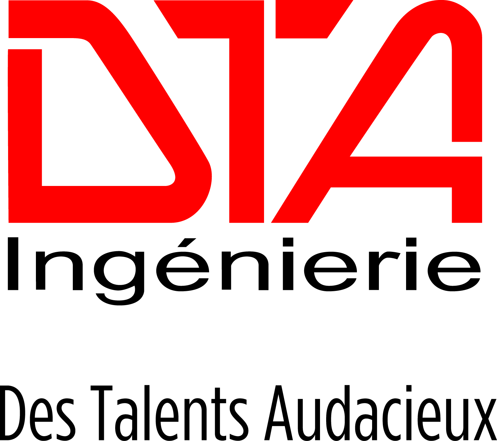

Mai 2020 - Septembre 2020
Formation pratique de Développement Java - DevOps
Cette formation pratique vise à compléter et concrétiser les connaissances nécessaires pour le
développement et la maintenance d’applications JAVA Full Stack dans un contexte DevOps avec Docker
et Jenkins.
Parmi les Différents enseignements, il est important de noter :
- L'apprentissage de Java, nottamment la programmation orientée objet
- L'utilisation du framework Spring
- L'apprentissage de JavaScript
- L'utilisation du framework AngularJS
- La mise en place de la méthode de développement agile avec Scrum
Septembre 2017 - Septembre 2019

Master 2 Bioinformatique
Ce master 2 répond à un besoin grandissant de personnes ayant des connaissances et des compétences à
la fois dans la biologie, mais aussi dans l'informatique, afin d'analyser et de gérer les masses de
données incroyables que génère la biologie de nos jours. De ce fait, ce master forme à l'analyse de
données, à la conception d'alogithmes et d'applications mis au service de la biologie.
Du fait des environnements biologiques vastes, cette formation forme des personnes qui soient capable de travailler dans toutes les situations et dans plusieurs langages. Parmi les Différents enseignements, il est important de noter :
- Des connaissances biologiques spécifique à l'utilisation d'outils informatique :
- La Bioinformatique structurale
- Les biostatistiques
- L'analyse de données biologiques (NGS)
- Les méthodes de programmation et de l'algorithmie avancée pour la Bioinformatique
- Mais aussi un apprentissage plus informatique :
- Apprentissage du shell
- Apprentissage de C/C++
- Apprentissage de HTML, CSS, Bootstrap
- Apprentissage de SQL et liaison avec PHP
- Apprentissage de Python
Le master 2 a été validé en septembre 2019 avec la mention Bien.
Septembre 2014 - Août 2017
Licence 3 Biochimie - Biologie moléculaire
La licence Sciences de la vie - Option Biochimie Biologie Moléculaire (BBM) propose une formation
générale
à la biologie avec une emphase sur la biologie moléculaire, et
forme à travailler en équipe dans un environnement rigoureux.
: La biochimie, la biologie moléculaire et
cellulaire, l'immunologie, les biostatistiques, la génétique du développement, et l'introduction à
l'informatique pour la biologie.
Parmi les principales matières, il peut être noté :
- La biochimie
- La biologie moléculaire
- La biologie cellulaire
- L'immunologie
- La génétique du développement
- La biologie animale
- La biologie végétale
- L'introduction au biostatistiques
- L'introduction à HTML
- L'introduction à JavaScript
Septembre 2010 - Juillet 2014
Lycée Jean Perrin, Rezé
Baccalauréat Série S
Baccalauréat général, option sciences de la vie. Obtenu avec la mention Bien.